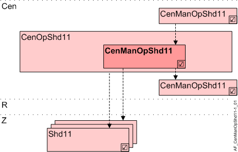
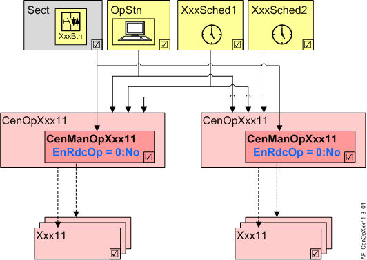
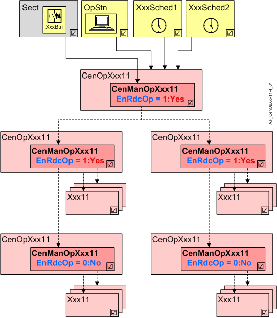

着色的中央手动操作（CenManOpShd11）
Overview
应用功能》Central manual operation shading 11" (CenManOpShd11）使用按钮处理中央操作。

岑 | 中央职能 |
CenOpShd11 | Central operation shading 11 |
CenManOpShd11 | Central manual operation shading 11 |
R | 房间 |
Z | 房间部分的遮阳区域 |
Shd11 | Shading 11, for shading and daylight use with venetian blinds or awnings、小组成员 |
Function
集中手动操作等同于本地机房操作。操作通过 up/down 按钮进行。不支持拨动开关。
通过另一个集成按钮可以覆盖手动覆盖，即恢复自动模式。
来自该 AF 的命令通过分组分发到连接的遮阳区域 (Shd11) 或其他 AFs CenOpShd11 （组成员）。
Functionality for preloaded applications
CenManOpShd01 可以单独发挥作用，作为组管理员或组成员（可以配置）。更高级别的组管理器仅提供减少的功能（上移/down）。
仅支持 KNX PL-Link 上的按钮。必须将其预定义为着色按钮。
支持以下功能：
命令 | 描述 |
|---|---|
Move up | Move up |
Move down | Move down |
Step up | Step up |
Step down | Step down |
多个按钮可以具有相同或不同的功能。最后一个命令获胜。
Interface to local and superordinate functions
本地输入和上级 AFs 访问相同的 BACnet 对象。按优先级评估。本地按钮的优先级高于上级中央功能的着色命令。
Configuration
 Parameter
Parameter
与分层分组相比，更多状态可用于直接命令 CenManOpShd 到房间分段的着色（例如，向上和向下）。
层次结构中的简化操作必须使用参数 EnRdcOp 进行参数化。
如果CenManOpShd11专门用于命令房间段中的阴影AFs，则参数EnRdcOp保留默认值0：否。
如果 CenManOpShd11 是层次结构中的管理者，则参数 EnRdcOp 必须设置为 1：是。
如果不清楚是否直接且排他地命令着色 AFs（有疑问：1：是），则需要执行此步骤。
描述 | 范围 | 默认值 |
|---|---|---|
Enable for reduced operation 0:No | EnRdcOp | 0:No |
Interface
界面 | 描述 | 类型 | 参考号 | 所有者 | |
|---|---|---|---|---|---|
BlsBtnCol | Collection of blinds pushbutton | ColView | ● | - | |
| BlsBtn | Blinds pushbutton | BlsIn | ◉ | Central function / Device |
Engineering and commissioning
由于分组 xFBs 无法在事件触发图表的循环中工作，因此在 OB 1 中查询 AF。
本地操作：OB40 以实现快速反应。
Functionality for free programming
CenManOpShd01 可以单独运行，作为组管理员或组成员（可以配置）。高级组管理器中仅提供减少的功能。
支持的操作功能取决于按钮的层次结构和类型：
AF 是叠加的组管理器 | No | 是的 | |||
|---|---|---|---|---|---|
按钮类型1) | TX | PL | TX | PL | |
命令 | 描述 |
|
|
|
|
Stop | Stop | X |
|
|
|
Move up | Move up | X | X | X | X |
Move down | Move down | X | X | X | X |
Step up | Step up | X | X |
|
|
Step down | Step down | X | X |
|
|
Go to height | Go to height | X |
| X 2) |
|
Go to angle | Go to angle | X |
| X 2) |
|
Go to height & angle | Go to height & angle | X |
| X 2) |
|
Go to position | Go to position | X |
|
|
|
User defined 1 | User defined 1 |
|
|
|
|
User defined 2 | User defined 2 |
|
|
|
|
User defined 3 | User defined 3：重置为自动 | X |
| X |
|
User defined 4 | 开放定制功能 |
|
|
|
|
User defined 5 | 开放定制功能 |
|
|
|
|
1)TX-I/O 上的按钮：可以配置该功能。
KNX PL-Link 上的按钮必须预定义为百叶窗按钮。
2)所有高度和角度都映射到多状态值：0%/undef、25%/undef、75%/undef、100%/0%、100%/ 25%、100%/50%、100%/100%。
多个按钮可以具有相同或不同的功能。最后一个命令获胜。
EnRdcOp
作为直接命令 CenManOpShd 阴影到房间分段的一部分，比分层分组的情况有更多的状态可用（例如，向上和向下）。
参数 EnRdcOp 必须用于参数化层次结构中的简化操作。
Reason
信息通过 CenManOpXxx11 和 Lgt/Shd AFs 之间相应的 Lgt/Shd BA 对象（LgtAOut、LgtBOut、BlsOut）直接交换。因此，所有已知命令均可用（开、关、调光/down、步进/down、移动/down等）。
对于两个分层管理器之间的通信，不存在这样的对象，因为 Desigo 都不知道照明或百叶窗的相应过程值 BA 对象。
因此，信息必须通过多状态对象来实现。但是，多状态对象不允许 Step up/down. 因此，分层管理器之间的功能必须受到限制（EndRdcOp = 1：是）。
因此，只有 On/Off、Auto 等命令可用。 Step up/down 因此无法被命令并转换为 On/Off.
Direct commanding
如果 CenOpManXxx11 专门用于直接命令房间段中的 Lgt/Shd AF，则该参数保持默认值（= 0：否）。

Hierarchical commanding
如果 CenManOpXxx11 在分层结构中用作管理器，则对于同时控制其他管理器的所有管理器，该参数必须设置为 1：是。
只有层次结构最低级别的管理者（因此专门控制房间段中的 Lgt/Shd AFs）保持为 0：否。
